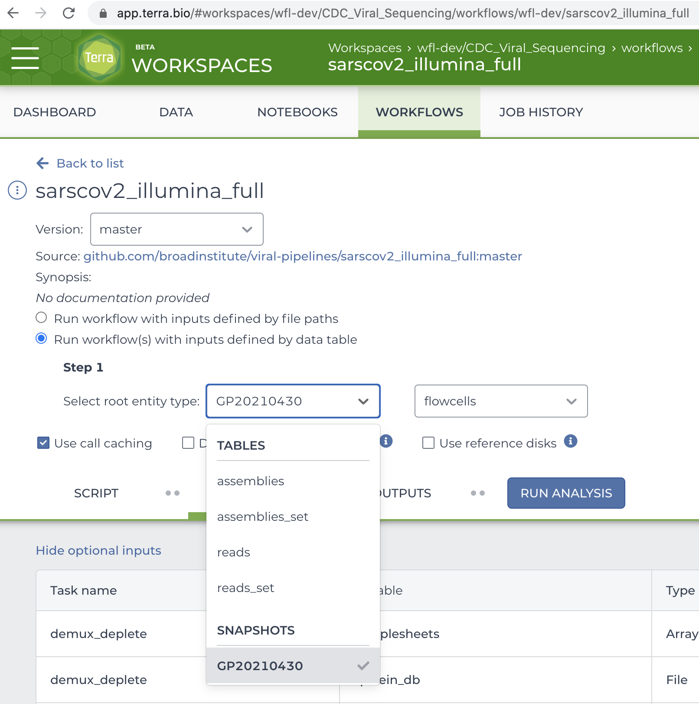

Executor⚓︎
The workload Executor models an intermediate stage of a processing pipeline.
An Executor uses a supported service in the cloud to execute workflows.
User Guide⚓︎
You can configure the type of Executor used in your workload by changing the
executor attribute of your workload request.
Terra Executor⚓︎
You can execute workflows in a Terra workspace using the Terra executor.
The Terra executor will...
- Coerce available outputs from an upstream
Sourceto a data type acceptable for submission creation (i.e. import a snapshot to theexecutorworkspace as a reference) - Update the method configuration with the coerced object as its root entity type
- Launch a submission
- Periodically update the statuses of eligible workflows to enable a
downstream
Sinkto consume their outputs
A typical Terra executor configuration in the workload request looks like:
{
"name": "Terra",
"workspace": "{workspace-namespace}/{workspace-name}",
"methodConfiguration": "{method-configuration-namespace}/{method-configuration-name}",
"methodConfigurationVersion": 1,
"fromSource": "importSnapshot"
}
And a real-life example for a known method configuration:
{
"name": "Terra",
"workspace": "wfl-dev/CDC_Viral_Sequencing",
"methodConfiguration": "wfl-dev/sarscov2_illumina_full",
"methodConfigurationVersion": 1,
"fromSource": "importSnapshot"
}

The table below summarises the purpose of each attribute in the above request.
| Attribute | Description |
|---|---|
name |
Selects the Terra executor implementation. |
workspace |
Terra Workspace in which to execute workflows. |
methodConfiguration |
Method configuration from which to generate submissions. |
methodConfigurationVersion |
Expected version of the method configuration. |
fromSource |
Instruction to coerce an output from an upstream Source to a type understood by this executor. |
workspace⚓︎
A {workspace-namespace}/{workspace-name} string as it appears in the URL path
in the Terra UI.
Prerequisites:
- The workspace must exist prior to workload creation.
workflow-launcher@firecloud.orgmust be a workspace "Writer" in order to import snapshots to the workspace.- The workspace must be compatible with any downstream processing stage that consumes its workflows.
methodConfiguration⚓︎
A {method-configuration-namespace}/{method-configuration-name} string as it
appears in the URL path in the Terra UI.
Prerequisites:
- The method configuration must exist within
workspaceprior to workload creation.
methodConfigurationVersion⚓︎
The expected version of methodConfiguration, stored as an integer in
Firecloud.
Example fetch of a method configuration's version from the appropriate Firecloud instance (prod):
FIRECLOUD=https://firecloud-orchestration.dsde-prod.broadinstitute.org
# Should be as they'd appear in a Terra UI URL path:
WORKSPACE=emerge_prod/Arrays_test
METHOD_CONFIG=warp-pipelines/Arrays
curl -X GET \
"$FIRECLOUD/api/workspaces/$WORKSPACE/method_configs/$METHOD_CONFIG" \
-H 'accept: */*' \
-H 'Authorization: Bearer '$(gcloud auth print-access-token) \
| jq .methodConfigVersion
7
Prerequisites:
- The
methodConfigurationversion when fetched from Firecloud at workload creation should matchmethodConfigurationVersion.
Implications of Version Mismatch
A version mismatch may indicate a possible concurrent modification of the method configuration used for launching submissions. Modification is possible programmatically or via the Terra UI. An unexpected modification may cause submission and/or workflow creation to fail.
fromSource⚓︎
This attribute tells workflow-launcher how to coerce an output
from an upstream Source into a data type understood by the executor.
Prerequisites:
- Must be one of the following supported coercion instructions.
importSnapshot⚓︎
Workflow-launcher should import Terra Data Repository (TDR) snapshots
into workspace as snapshot references,
updating methodConfiguration with the reference as its root entity type.
Developer Guide⚓︎
An executor is a Queue that satisfies the Executor protocol below:
(defprotocol Executor
(update-executor!
^Workload
[^Workload workload
]
"Consume items from the `workload`'s source queue and enqueue to its executor
queue for consumption by a later processing stage,
performing any external effects as necessary.
Implementations should avoid maintaining in-memory state and making long-
running external calls, favouring internal queues to manage such tasks
asynchronously between invocations. Note that the `Workload`'s Source queue and Executor
are parameterised types and the Source queue's parameterisation must be
convertible to the Executor's.")
(executor-workflows
^IPersistentVector
[^Connection transaction ;; JDBC Connection
^Executor executor ;; This executor instance
^IPersistentVector filters ;; Optional workflow filters to match
;; (ex. status, submission)
]
"Use database `transaction` to return workflows created by the `executor`
matching the optional workflow `filters` (ex. status, submission).")
(executor-throw-if-invalid-retry-filters
;; Executed for side effects
[^IPersistentHashmap workload ;; Workload for which a retry is requested
^IPersistentVector filters ;; Workflow filters
]
"Throw if workflow `filters` are invalid for `workload`'s retry request.")
(executor-retry-workflows!
;; Executed for side effects
[^Executor executor ;; This executor instance
^IPersistentVector workflows ;; Workflows to retry
]
"Retry/resubmit the `workflows` managed by the `executor`."))
Note
The Executor protocol is implemented by a set of multimethods of the same
name. The use of a protocol is to illustrate the difference between the
in-memory data model of a Executor and the metadata seen by a user.
To be used in a workload,
an Executor implementation
should satisfy the processing Stage protocol
and the to-edn multimethod
in addition to the following multimethods
specific to executors:
(defmulti create-executor
"Create an `Executor` instance using the database `transaction` and
configuration in the executor `request` and return a
`[type items]` pair to be written to a workload record as
`executor_type` and `executor_items`.
Notes:
- This is a factory method registered for workload creation.
- The `Executor` type string must match a value of the `executor` enum
in the database schema.
- This multimethod is type-dispatched on the `:name` association in the
`request`."
(fn ^[^String ^String]
[^Connection transaction ;; JDBC Connection
^long workload-id ;; ID of the workload being created
^IPersistentHashMap request ;; Data forwarded to the handler
]
(:name request)))
(defmulti load-executor!
"Return the `Executor` implementation associated with the `executor_type` and
`executor_items` fields of the `workload` row in the database.
Note that this multimethod is type-dispatched on the `:executor_type`
association in the `workload`."
(fn ^Executor
[^Connection transaction ;; JDBC Connection
^IPersistentHashMap workload ;; Row from workload table
]
(:executor_type workload)))